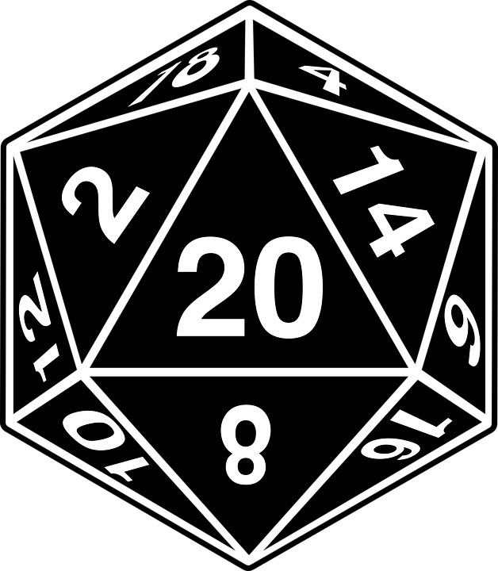

Provisões 🍴
Ao final de cada dia de aventura, um representante do grupo deve rolar  para determinar o consumo de recursos. Se o resultado for 9 ou menos, o grupo consome 1 (um) uso de seus suprimentos, representando o desgaste natural de mantimentos, água, e outros itens essenciais para a sobrevivência.
Caso o grupo acumule a perda de 3 usos do medidor de recursos, ele será considerado desabastecido. Enquanto estiver nessa condição, os personagens poderão sofrer penalidades, como exaustão, fome ou dificuldades em realizar determinadas ações. Essa mecânica funciona de maneira semelhante ao Teste de Resistência à Morte, exigindo medidas urgentes para reabastecer os suprimentos antes que a situação se torne crítica.
Falha Crítica & Desgaste de Armas
Se um personagem ou criatura obtiver um 1 natural ao realizar um ataque, seu turno será encerrado imediatamente, representando um erro crítico ou uma falha inesperada. Além disso, a arma utilizada sofrerá um desgaste, reduzindo seu modificador de ataque e dano em -1.
Esse efeito é acumulativo, ou seja, múltiplas falhas críticas podem enfraquecer progressivamente a arma até que ela se torne inutilizável, exigindo reparos ou substituição.
Acerto Excepcional
Se um ataque resultar em um 17, 18 ou 19 natural no e atingir o alvo, ele causará o dano máximo da arma em vez de rolar normalmente.
Caso o ataque seja um acerto crítico (20 natural no ), a rolagem de dano será modificada. Em vez de rolar o dobro de dados de dano, o atacante maximiza o valor de um dos dados e rola o outro normalmente.
Exemplo: Se um personagem acerta um golpe crítico com uma arma que normalmente causa 2d8 de dano, em vez de rolar 2d8, ele maximiza um dos dados (8) e rola o outro normalmente (1d8), garantindo um dano mais consistente nos acertos críticos.
PVs Negativo
Quando um personagem atinge zero pontos de vida, qualquer dano excedente é registrado como pontos de vida negativos. Esse valor afeta diretamente suas chances de sobrevivência, pois deve ser subtraído dos testes de salvaguarda contra a morte, tornando mais difícil resistir à morte iminente. Se o personagem receber cura enquanto estiver inconsciente, a quantidade curada reduz os pontos de vida negativos, mas ele só se estabiliza quando atingir zero pontos de vida ou mais. Até que isso aconteça, ele continua em perigo, sujeito a falhas nas salvaguardas e possíveis consequências fatais.
Upar Nivel
Todos os jogadores começam com 0 de XP e precisam acumular 100 XP para subir de nível. Ao atingir esse valor, seu XP é zerado, e um novo ciclo de progresso se inicia, exigindo novamente 100 XP para o próximo nível.
Os jogadores ganham XP de três maneiras principais:
Batalhando: Enfrentando e derrotando inimigos.
Explorando: Descobrindo locais, resolvendo enigmas e superando desafios ambientais.
Interagindo: Participando de diálogos importantes, tomando decisões significativas e avançando na narrativa.
Ao final de cada sessão, eu informarei a quantidade de XP que cada jogador recebeu. O XP será distribuído de forma coletiva, ou seja, ele não depende apenas do desempenho individual. Mesmo que um jogador tenha causado mais dano em combate, e outro tenha tido uma participação menor em batalha, ambos ainda receberão XP de forma equilibrada, considerando a contribuição geral do grupo para o avanço da aventura.
Dado de Inspiração
Diferente das regras tradicionais descritas no livro, o Dado de Inspiração garante sucesso automático em um teste. Quando um jogador utiliza a Inspiração, o teste é tratado como se fosse um acerto crítico, independentemente do resultado da rolagem do dado. Isso significa que, ao usar a Inspiração, o personagem não precisa rolar para determinar se o teste é bem-sucedido; o sucesso é garantido. Além disso, qualquer efeito ou benefício normalmente associado a um acerto crítico (como o dano máximo ou outros bônus) será aplicado ao teste em questão.
Flanqueamento
Quando dois ou mais atacantes flanqueiam um inimigo, posicionando-se em direções opostas, cada atacante recebe um bônus de +3 no ataque contra esse inimigo. Isso reflete a vantagem estratégica de engajar o inimigo de múltiplos ângulos, tornando-o mais vulnerável. Esse bônus se aplica exclusivamente ao ataque e não afeta outros aspectos do combate, como dano ou defesas. Além disso, para que a flanquear seja válida, os atacantes devem estar em posições opostas de forma clara, sem obstáculos que bloqueiem a linha de visão ou o alcance do ataque.
Eu conheço um cara…
Cada jogador, ao longo de uma campanha, possui a mecânica "Eu conheço um cara...", que permite criar um personagem não-jogador (PJ) que pode fornecer ajuda ou recursos ao grupo em diversas situações. Esse aliado pode ser um velho conhecido, um contato em uma cidade distante, ou alguém com habilidades e conhecimentos específicos que possam ser úteis para o grupo. Esse personagem pode intervir de várias formas, como fornecer informações valiosas, ajudar em uma negociação, oferecer itens raros, ou até auxiliar em batalhas, dependendo da situação. A utilização dessa mecânica deve ser limitada a momentos em que o grupo realmente precise de assistência, mantendo o equilíbrio e a narrativa da campanha.